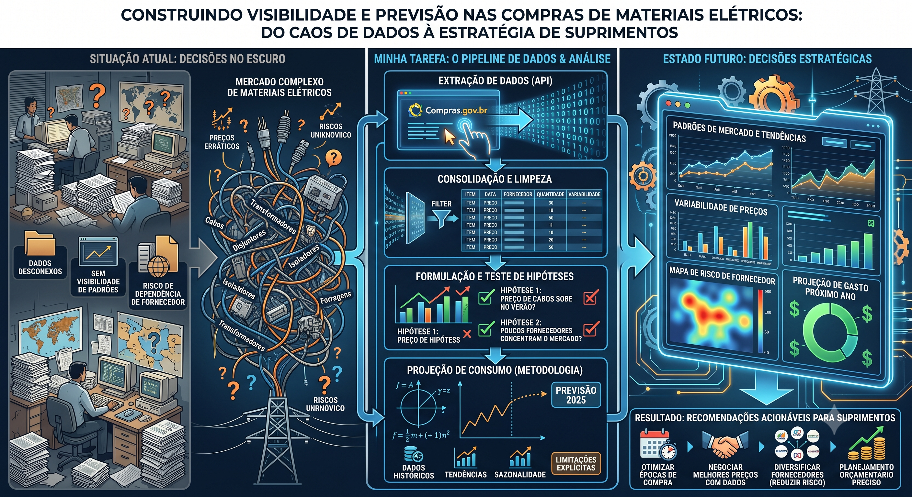
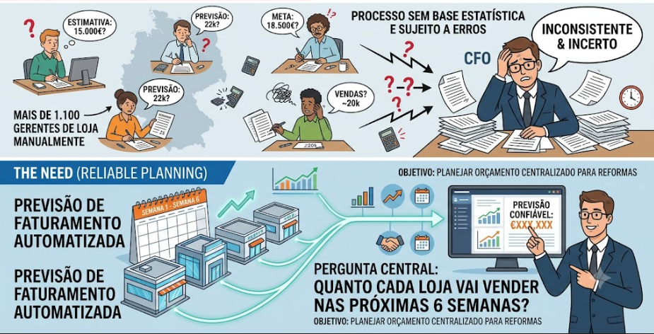
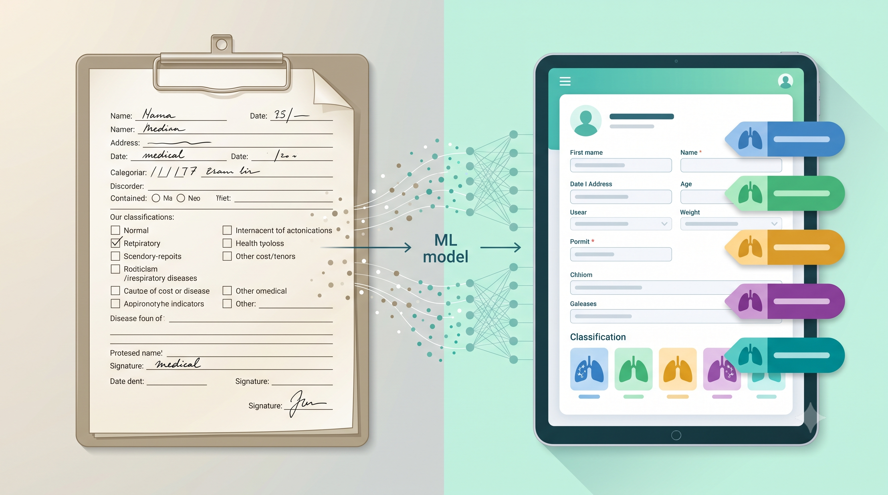

Analytics e BI
Organizo indicadores e investigo os fatores por trás dos resultados para apoiar decisões de operação e crescimento.
Diagnóstico · KPIs · dashboardsAnalytics · Data Science · BI
Ajudo equipes a entender o que acontece, antecipar cenários e agir com mais clareza — da análise inicial ao produto de dados em uso.
Mestrado pela UNICAMP · MBA em Data Science pela USP
Como posso ajudar
O trabalho começa pela pergunta de negócio. A solução pode ser uma análise, um modelo ou uma operação de dados que continue funcionando.
Organizo indicadores e investigo os fatores por trás dos resultados para apoiar decisões de operação e crescimento.
Diagnóstico · KPIs · dashboardsTransformo dados históricos em previsões e estimativas avaliadas com métricas adequadas ao problema.
Previsão · experimentação · machine learningConecto fontes, preparo dados e entrego análises em interfaces e serviços prontos para uso.
ETL · APIs · aplicações analíticasTrabalho em contexto
Problemas reais, caminhos analíticos e resultados documentados — com os limites de cada análise à vista.

Integrei a API do ComprasNet e organizei 164.680 registros de contratações públicas de componentes elétricos para apoiar negociações com fornecedores e projetar o exercício fiscal.
R$ 492 milhões em economia potencial estimada pela segmentação de itens por elasticidade (cerca de 31% do gasto analisado). Para 2027, a projeção ficou em R$ 368,4 milhões; o naive sazonal teve MAPE de 17,6%, ante 20,0% do XGBoost.

Desenvolvi previsões para as seis semanas seguintes, com variáveis temporais e de concorrência e validação de hipóteses para apoiar o planejamento centralizado de reformas.
O modelo final atingiu MAPE de aproximadamente 13%; a previsão consolidada ficou entre R$ 283,5 e R$ 285,2 milhões. Uma API Flask e um bot no Telegram permitem consultar cada loja.

Treinei um classificador multiclasse com dados do SIVEP-Gripe e variáveis de faixa etária, comorbidades, região, sazonalidade e vacinação, com aplicação publicada em infraestrutura sob demanda na AWS.
O XGBoost alcançou 68% de acurácia e F1 ponderado de 0,67. A variável mais preditiva, delta_uti, não tem documentação oficial no DATASUS; o modelo requer validação e não deve ser usado para decisões clínicas.
Construí um dashboard de inteligência de mercado para a BrasCo Gaming Ltd., reunindo indicadores de vendas, participação por região e retorno de parcerias.
37% do market share estava concentrado na América do Norte. As parcerias com a Microsoft tiveram o maior retorno observado, US$ 0,32 milhão por ponto; o terceiro ano de vida dos consoles surgiu como janela para lançamentos.
Priorizei dez hipóteses por impacto financeiro e analisei a variação de receita entre volume e ticket médio, apontando oportunidades em mix, personalização e operação.
A receita cresceu 103,8% no semestre, de R$ 81 mil para R$ 166 mil por mês, enquanto o ticket médio permaneceu em R$ 4,69 por seis meses. O crescimento observado foi volumétrico.
Estruturei indicadores para empresa, entregadores e restaurantes e analisei 41.419 pedidos com meta de entrega em até 30 minutos.
O Random Forest teve R² de 0,652, ante 0,428 da regressão linear. O SLA registrado foi 69,4%; entregas simultâneas somaram 20,5% da importância das variáveis no modelo, um sinal para investigação, não uma medida causal.

Montei um painel para explorar treinamento, ajuste de parâmetros e underfitting e overfitting em tarefas de classificação, regressão e agrupamento.
O ensaio compara modelos e métricas em diferentes configurações, tornando visível como cada parâmetro altera o comportamento dos algoritmos.
Stack de trabalho
Escolho métodos e tecnologias pelo problema, dos dados brutos à entrega para quem decide.

Sobre e método
Sou Guilherme Grandim, analista e cientista de dados. Minha formação em método científico orienta como investigo cada problema: explicito hipóteses, testo evidências e comunico limites junto com os resultados.
Trabalhei com dados no esporte de alto rendimento em clubes como Corinthians, Cruzeiro e Vasco, onde decisões precisam considerar contexto, prazos e informação incompleta.
Da pergunta à entrega
Contexto, objetivo e indicadores que importam.
Dados preparados, hipóteses explícitas e método adequado.
Análise ou produto com recomendações e limitações documentadas.
Ferramentas que apoiam o trabalho
Python · SQL · Power BI · Looker Studio · Streamlit · Scikit-learn · APIs · AWS
Próximo passo
Conte um pouco sobre o problema que sua equipe quer resolver. Podemos conversar sobre o melhor caminho analítico.